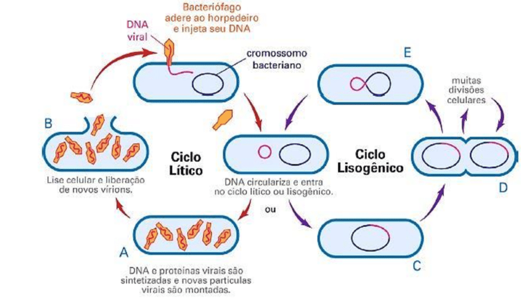

CICLO DE VIDA DOS BACTERIÓFAGOS:
CICLO LÍTICO E CICLO LISOGÊNICO
-------------------------------------------------------------
CICLO LÍTICO:
O ciclo lítico é o processo em que um bacteriófago infecta uma bactéria, replicando-se rapidamente e causando a destruição da célula hospedeira.
Isso resulta na liberação de novos fágos, que podem então infectar outras bactérias.

CICLO LISOGÊNICO:
O ciclo lisogênico é um modo de infecção em que o material genético do bacteriófago se integra ao DNA da bactéria, formando um profago
Nesse estado, a célula hospedeira se reproduz normalmente, transmitindo o DNA viral para suas células filhas. O profago pode ser ativado posteriormente, iniciando o ciclo lítico.
ETAPAS DO CICLO: ADSORÇÃO, PENETRAÇÃO, REPLICAÇÃO, MONTAGEM E LIBERAÇÃO.
- Ciclo Lítico
- Adsorção: O fago se liga à superfície da bactéria hospedeira.
- Penetração: O material genético do fago é injetado na célula bacteriana.
- Replicação: O maquinário celular da bactéria começa a produzir novas partículas virais usando o material genético do fago.
- Montagem: As novas partículas virais são montadas.
- Liberação: A célula bacteriana se rompe (lisamento), liberando os novos fágos para infectar outras bactérias.
- Ciclo Lisogênico
- Adsorção: Similar ao ciclo lítico, o fago se liga à bactéria.
- Penetração: O material genético do fago é injetado.
- Integração: O DNA do fago se integra ao DNA da bactéria, tornando-se um profago. A célula bacteriana continua a se reproduzir normalmente, transmitindo o DNA viral para as células filhas.
- Ativação: Em condições favoráveis, o profago pode ser ativado, saindo do genoma da bactéria e iniciando o ciclo lítico.